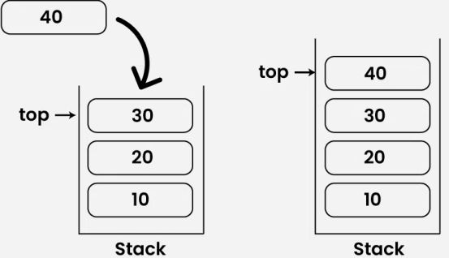
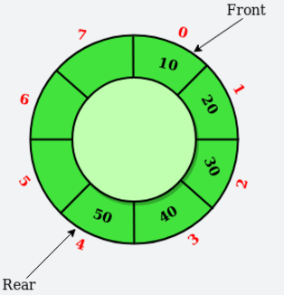

unit 2
Module 2:
Stacks: Stacks as ADT, Different implementation of stack, multiple stacks. Application of Stack: Conversion of infix to postfix notation using stack, evaluation of postfix expression, Recursion. Queues Queues as ADT, Different implementation of queue, Circular queue, Concept of Dqueue and Priority Queue, Queue simulation, Application of queues.
STACK
What is Stack Data Structure?
Stack
is a
linear data structure
based on LIFO(Last In First Out) principle in which the insertion of a new element and removal of an existing element takes place at the same end represented as the
top
of the stack.
To implement the stack, it is required to maintain the
pointer to the top of the stack
, which is the last element to be inserted because
we can access the elements only on the top of the stack.
Types of Stack Data Structure:
- •
•
Fixed Size Stack
:
As the name suggests, a fixed size stack has a fixed size and cannot grow or shrink dynamically. If the stack is full and an attempt is made to add an element to it, an overflow error occurs. If the stack is empty and an attempt is made to remove an element from it, an underflow error occurs
.
•
•
Dynamic Size Stack
:
A dynamic size stack can grow or shrink dynamically. When the stack is full, it automatically increases its size to accommodate the new element, and when the stack is empty, it decreases its size. This type of stack is implemented using a linked list, as it allows for easy resizing of the stack.
Basic Operations on
Stack Data Structure:
Push Operation
Adds an item to the stack. If the stack is full, then it is said to be an
Overflow condition.
- •
• Before pushing the element to the stack, we check if the stack is
full
.
- •
• If the stack is full
(top == capacity-1)
, then
Stack Overflows
and we cannot insert the element to the stack.
- •
• Otherwise, we increment the value of top by 1
(top = top + 1)
and the new value is inserted at
top position
.
- •
• The elements can be pushed into the stack till we reach the
capacity
of the stack.

Pop Operation in Stack Data Structure:
Removes an item from the stack. The items are popped in the reversed order in which they are pushed. If the stack is empty, then it is said to be an
Underflow condition.
Algorithm for Pop Operation:
- •
• Before popping the element from the stack, we check if the stack is
empty
.
- •
• If the stack is empty (top == -1), then
Stack Underflows
and we cannot remove any element from the stack.
- •
•
Otherwise, we store the value at top, decrement the value of top by 1
(top = top – 1)
and return the stored top value.
•
Top or Peek Operation in Stack Data Structure:
Returns the top element of the stack.
Algorithm for Top Operation:
- •
• Before returning the top element from the stack, we check if the stack is empty.
- •
• If the stack is empty (top == -1), we simply print “Stack is empty”.
- •
• Otherwise, we return the element stored at
index = top
.
isEmpty Operation in Stack Data Structure:
Returns true if the stack is empty, else false.
Algorithm for isEmpty Operation
:
- •
• Check for the value of
top
in stack.
- •
• If
(top == -1)
, then the stack is
empty
so return
true
.
- •
• Otherwise, the stack is not empty so return
false
.
isFull
Operation in Stack
Data Structure
:
Returns true if the stack is full, else false.
Algorithm for isFull Operation:
- •
• Check for the value of
top
in stack.
- •
• If
(top == capacity-1),
then the stack is
full
so return
true
.
- •
• Otherwise, the stack is not full so return
false
.
Implementation of Stack
Data Structure
:
The basic operations that can be performed on a stack include push, pop, and peek. There are two ways to implement a stack –
- •
•
Using
Array
- •
•
Using
Linked List
Implementation of Stack Data Structure using Array:
#include<stdio.h>
//impementation with array
Class Stack
{
int *arr;
int size;
int top;
Public:
stack( int s )
size=s;
top=-1;
arr= new int[s];
//first function (PUSH)
void push(int value)
if(top==size-1)
{
cout << "Stack Overflow";
return;
}
else
{
top++
arr[top] = value
cout<<"Pushed "<<value<<"into the stack\n"
}
void pop()
if(top==-1)
{
cout << "stack overflow";
}
Advantages of Array Implementation:
- •
• Easy to implement.
- •
• Memory is saved as pointers are not involved.
Disadvantages of Array Implementation:
- •
• It is not dynamic i.e., it doesn’t grow and shrink depending on needs at runtime. [But in case of dynamic sized arrays like vector in C++, list in Python, ArrayList in Java, stacks can grow and shrink with array implementation as well].
- •
• The total size of the stack must be defined beforehand.
Implementation of Stack Data Structure using Linked List:
Advantages of Linked List implementation:
- •
• The linked list implementation of a stack can grow and shrink according to the needs at runtime.
- •
• It is used in many virtual machines like JVM.
Disadvantages of Linked List implementation:
- •
• Requires extra memory due to the involvement of pointers.
- •
• Random accessing is not possible in stack.
Complexity Analysis of Operations on Stack Data Structure:
| Operations | Time Complexity | Space Complexity |
|---|
| push() | O(1) | O(1) |
| pop() | O(1) | O(1) |
| top() or peek() | O(1) | O(1) |
| isEmpty() | O(1) | O(1) |
| isFull() | O(1) | O(1) |
Advantages of Stack
Data Structure
:
- •
•
Simplicity:
Stacks are a simple and easy-to-understand data structure, making them suitable for a wide range of applications.
- Efficiency:
Push and pop operations on a stack can be performed in constant time
(O(1)) , providing efficient access to data.
- •
•
Last-in, First-out (LIFO):
Stacks follow the LIFO principle, ensuring that the last element added to the stack is the first one removed. This behavior is useful in many scenarios, such as function calls and expression evaluation.
- Limited memory usage:
Stacks only need to store the elements that have been pushed onto them, making them memory-efficient compared to other data structures.
Disadvantages of Stack
Data Structure
:
- Limited access:
Elements in a stack can only be accessed from the top, making it difficult to retrieve or modify elements in the middle of the stack.
- Potential for overflow:
If more elements are pushed onto a stack than it can hold, an overflow error will occur, resulting in a loss of data.
- Not suitable for random access:
Stack
s do not allow for random access to elements, making them unsuitable for applications where elements need to be accessed in a specific order.
- Limited capacity:
Stacks have a fixed capacity, which can be a limitation if the number of elements that need to be stored is unknown or highly variable.
Applications of Stack Data Structure:
Infix to Postfix /Prefix conversion
Redo-undo features at many places like editors, photoshop.
Forward and backward features in web browsers
In Memory management, any modern computer uses a stack as the primary management for a running purpose. Each program that is running in a computer system has its own memory allocations.
Stack also helps in implementing function call in computers. The last called function is always completed first.
Queue
Data Structure
:
Queue Dat Structure is a linear Data structure that follows
FIFO (First In First Out) Principle
, so the first element inserted is the first to be popped out.
Types of Queues:
There are
five different types of queues
that are used in different scenarios. They are:
- Circular Queue
- Output Restricted Queue (this is also a Simple Queue)
- Input Restricted Queue (this is a Simple Queue)
- Double Ended Queue (Deque)
- Priority Queue
- • • Ascending Priority Queue
- Descending Priority Queue
Circular Queue:
Circular Queue is a linear data structure in which the operations are performed based on FIFO (First In First Out) principle and the last position is connected back to the first position to make a circle. It is also called
‘Ring Buffer’

Operations on Circular Queue:
- •
•
Front:
Get the front item from the queue.
- •
•
Rear:
Get the last item from the queue.
- •
•
enQueue(value)
This function is used to insert an element into the circular queue. In a circular queue, the new element is always inserted at the rear position.
Check whether the queue is full – [i.e., the rear end is in just before the front end in a circular manner].
- •
• If it is full then display Queue is full.
•
• If the queue is not full then, insert an element at the end of the queue.
- •
•
deQueue()
This function is used to delete an element from the circular queue. In a circular queue, the element is always deleted from the front position.
Check whether the queue is Empty.
- •
• If it is empty then display Queue is empty.
•
• If the queue is not empty, then get the last element and remove it from the queue.
Implement Circular Queue using Array:
- • •
Initialize an array queue of size
n
, where n is the maximum number of elements that the queue can hold.
- • •
Initialize two variables front and rear to -1.
- • •
Enqueue:
To enqueue an element
x
into the queue, do the following:• Increment rear by 1.
•
• If
rear
is equal to n, set
rear
to 0.
- •
•
If
front
is -1, set
front
to 0.
- •
•
Set queue[rear] to x.
- •
•
Dequeue:
To dequeue an element from the queue, do the following:◇ Check if the queue is empty by checking if
front
is -1.
•
• If it is, return an error message indicating that the queue is empty.
Set
x
to queue[front].
- • •
If
front
is equal to
rear
, set
front
and
rear
to -1.
- •
•
Otherwise, increment
front
by 1 and if
front
is equal to n, set
front
to 0.
- •
•
Return x.
Complexity Analysis of Circular Queue Operations:
- •
•
Time Complexity:
Enqueue: O(1) because no loop is involved for a single enqueue.
Dequeue: O(1) because no loop is involved for one dequeue operation.
- •
•
Auxiliary Space:
O(N) as the queue is of size N.
Applications of Circular Queue:
Memory Management:
The unused memory locations in the case of ordinary queues can be utilized in circular queues.
Traffic system:
In computer controlled traffic system, circular queues are used to switch on the traffic lights one by one repeatedly as per the time set.
-
CPU Scheduling:
Operating systems often maintain a queue of processes that are ready to execute or that are waiting for a particular event to occur.
This queue is primarily used in the following cases:
- 1.
1.
Memory Management:
The unused memory locations in the case of ordinary queues can be utilized in circular queues.
- 2.
2.
Traffic system:
In a computer-controlled traffic system, circular queues are used to switch on the traffic lights one by one repeatedly as per the time set.
- 3.
3.
CPU Scheduling:
Operating systems often maintain a queue of processes that are ready to execute or that are waiting for a particular event to occur.
The time complexity for the circular Queue is O(1).
Output restricted Queue
:
In this type of Queue, the input can be taken from both sides(rear and front) and the deletion of the element can be done from only one side(front). This queue is used in the case where the inputs have some priority order to be executed and the input can be placed even in the first place so that it is executed first.
Input restricted Queue:
In this type of Queue, the input can be taken from one side only(rear) and deletion of elements can be done from both sides(front and rear). This kind of Queue does not follow FIFO(first in first out). This queue is used in cases where the consumption of the data needs to be in FIFO order but if there is a need to remove the recently inserted data for some reason and one such case can be irrelevant data, performance issue, etc.
Double ended Queue
:
Double Ended Queue is also a Queue data structure in which the insertion and deletion operations are performed at both the ends (front and rear). That means, we can insert at both front and rear positions and can delete from both front and rear positions. Since Deque supports both stack and queue operations, it can be used as both. The Deque data structure supports clockwise and anticlockwise rotations in O(1) time which can be useful in certain applications. Also, the problems where elements need to be removed and or added both ends can be efficiently solved using Deque.
Priority Queue
:
A priority queue is a special type of queue in which each element is associated with a priority and is served according to its priority.
Properties of Priority Queue
So, a priority Queue is an extension of the
queue with the following properties.
Every item has a priority associated with it.
An element with high priority is dequeued before an element with low priority.
If two elements have the same priority, they are served according to their order in the queue.
In the below priority queue, an element with a maximum ASCII value will have the highest priority. The elements with higher priority are served first.
How is Priority assigned to the elements in a Priority Queue?
In a priority queue, generally, the value of an element is considered for assigning the priority.
For example, the element with the highest value is assigned the highest priority and the element with the lowest value is assigned the lowest priority. The reverse case can also be used i.e., the element with the lowest value can be assigned the highest priority. Also, the priority can be assigned according to our needs.
Operations of a Priority Queue:
A typical priority queue supports the following operations:
- 1)
1) Insertion in a Priority Queue
When a new element is inserted in a priority queue, it moves to the empty slot from top to bottom and left to right. However, if the element is not in the correct place then it will be compared with the parent node. If the element is not in the correct order, the elements are swapped. The swapping process continues until all the elements are placed in the correct position.
- 2)
2) Deletion in a Priority Queue
As you know that in a max heap, the maximum element is the root node. And it will remove the element which has maximum priority first. Thus, you remove the root node from the queue. This removal creates an empty slot, which will be further filled with new insertion. Then, it compares the newly inserted element with all the elements inside the queue to maintain the heap invariant.
- 3)
3) Peek in a Priority Queue
This operation helps to return the maximum element from Max Heap or the minimum element from Min Heap without deleting the node from the priority queue.
Types of Priority Queue:
- 1)
1) Ascending Order Priority Queue
As the name suggests, in ascending order priority queue, the element with a lower priority value is given a higher priority in the priority list. For example, if we have the following elements in a priority queue arranged in ascending order like 4,6,8,9,10. Here, 4 is the smallest number, therefore, it will get the highest priority in a priority queue and so when we dequeue from this type of priority queue, 4 will remove from the queue and dequeue returns 4.
- 2)
2) Descending order Priority Queue
The root node is the maximum element in a max heap, as you may know. It will also remove the element with the highest priority first. As a result, the root node is removed from the queue. This deletion leaves an empty space, which will be filled with fresh insertions in the future. The heap invariant is then maintained by comparing the newly inserted element to all other entries in the queue.
- 1)
1) Implement Priority Queue Using Array:
A simple implementation is to use an array of the following structure.
struct item {
int item;
int priority;
}
- •
•
enqueue():
This function is used to insert new data into the queue.
- •
•
dequeue():
This function removes the element with the highest priority from the queue.
- •
•
peek()/top():
This function is used to get the highest priority element in the queue without removing it from the queue
| Arrays | enqueue() | dequeue() | peek() |
|---|
| Time Complexity | O(1) | O(n) | O(n) |
- 2)
2) Implement Priority Queue Using Linked List:
In a LinkedList implementation, the entries are sorted in descending order based on their priority. The highest priority element is always added to the front of the priority queue, which is formed using linked lists. The functions like
push()
,
pop()
, and
peek()
are used to implement a priority queue using a linked list and are explained as follows:
- push():
This function is used to insert new data into the queue.
- pop():
This function removes the element with the highest priority from the queue.
- peek() / top():
This function is used to get the highest priority element in the queue without removing it from the queue.
| Linked List | push() | pop() | peek() |
|---|
| Time Complexity | O(n) | O(1) | O(1) |